Tutorials
Fang mit der Taspir-Mission an - sie baut aus dem Nichts eine ganze Zwischensequenz für Jedi Academy und berührt fast jeden Teil des Programms. Die kurzen Tutorials unten zeigen jeweils eine Sache in wenigen Schritten.
Interaktive Tutorials im Programm#
Manche Tutorials laufen auch im Programm selbst: Hilfe → Interaktive Tutorials (oder Interaktive Tour auf der Startfläche) öffnet ein kleines Fenster mit der Liste. Wähle eines und drücke Starten: das Programm dunkelt alles ab außer dem Bedienelement, das du brauchst, rahmt es gelb ein und geht von selbst weiter, sobald du den Schritt erledigt hast - egal ob über den Knopf, das Menü oder die Taste.
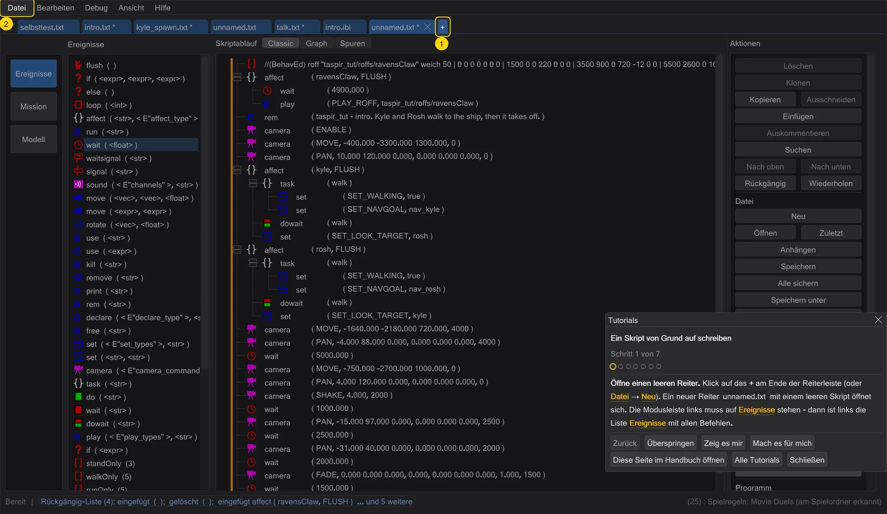
- Zurück geht einen Schritt zurück. Überspringen überspringt einen Schritt - wo es geht, bereitet das Programm den nächsten vor (dein Skript ändert es dabei nie). Weiter geht nach einem Schritt zum Ansehen weiter.
- Zeig es mir fährt einen Zeiger an die richtige Stelle; geklickt wird nichts. Mach es für mich erledigt den Schritt für dich - nur wo das sicher ist, nie beim Speichern (das nach einem Dateinamen fragt).
- Diese Seite im Handbuch öffnen öffnet die Seite mit ihren Bildern im Browser. Das Suchfeld unter der Liste durchsucht dieses Handbuch, ohne Netz.
- Das Programm merkt sich, wie weit du gekommen bist; beim nächsten Mal machst du dort weiter.
- Die ersten fünf sind die Skript-Tutorials Ein Skript von Grund auf schreiben, Drei Wege, einen Befehl einzufügen, Die Werte eines Befehls ändern, Zeilen verschieben, kopieren und auskommentieren und Übersetzen und Fehler beheben, in der Ansicht Classic.
Alle Tutorials auf einen Blick#
Nimm irgendeins - jedes steht für sich. Unter der Liste: das große Projekt, dann jedes kurze Tutorial als Karte mit Bild.
Das große Projekt 9
Skripte 18
- Ein Skript von Grund auf schreiben
- Drei Wege, einen Befehl einzufügen
- Die Werte eines Befehls ändern
- Zeilen verschieben, kopieren und auskommentieren
- Alles rückgängig machen - sogar einen Schritt aus der Mitte
- Suchen und Ersetzen in allen offenen Skripten
- Lesezeichen und die geteilte Ansicht
- Übersetzen und Fehler beheben
- Warten, bis eine Figur angekommen ist
- Zwei Skripte aufeinander warten lassen
- Makros nutzen
- Nur beim ersten Mal: Variablen und if
- Eine Wache dreht ihre Runde
- Ein übersetztes Skript des Spiels öffnen
- Dateien in den Spielarchiven finden
- Sehen, was du geändert hast
- Eine alte Version zurückholen
- Die Warnungen verstehen
Kamera und Zeitleiste 11
- Eine Kameraeinstellung selbst fliegen
- Eine Einstellung dorthin setzen, wohin du schaust
- Die Kamera auf eine Marke in der Karte richten
- Zoomen, schwarz abblenden und wackeln
- Eine Zwischensequenz in der Zeitleiste neu takten
- Beim Arbeiten durch die Kamera schauen
- Die Kamera einer Figur folgen lassen
- Ein Video oder eine Textzeile zeigen
- Eine Szene in der Spuren-Ansicht timen
- Die Zeitleiste im Detail
- Blickpunkte und Kamerabahnen merken
Figuren 8
- Gehen, rennen oder rückwärts laufen
- Eine Figur jemanden ansehen lassen
- Eine Figur zu einem Zeitpunkt drehen
- Eine Figur eine Animation spielen lassen
- Einen Satz Dialog hinzufügen
- Nach der Zwischensequenz einen Kampf beginnen
- Den Spieler während eines Gesprächs festhalten
- Ein Lichtschwert in einer Szene zünden
Karte und Entities 12
- Entities setzen, verschieben und drehen
- Eine Entity finden und hinfliegen
- Die Schlüssel einer Entity bearbeiten
- Die Karte von oben ansehen
- Besser sehen in dunklen Karten
- Eine Szene starten, wenn der Spieler irgendwo hingeht
- Eine Tür aus dem Skript öffnen
- Am Ende zur nächsten Karte wechseln
- Einen Effekt hinzufügen und die Musik wechseln
- Viele Entities auf einmal bewegen
- Eine Figur, die auf Stichwort erscheint
- Eine separate .ent-Datei laden
Animation 2
Missionen und Modelle 12
- Eine Figur mit einem Skript verbinden
- Eine Mission fortsetzen und packen
- NPCs Wege zum Laufen geben
- Ein Figurenmodell ansehen
- Eine Zwischensequenz des Spiels ändern
- Ein Skript für den Mehrspielermodus prüfen
- Stirbt der Feind, geht die Tür auf
- Der Spieler spricht mit einer Figur
- Mehrere Skripte zusammenarbeiten lassen
- Beheben, was Mission speichern meldet
- Skins und Skelette eines Modells
- Das Programm nach deinem Geschmack einrichten
Das große Tutorial: deine eigene Mission#

Alle Tutorials nutzen das Grundspiel - die Karte taspir1 und ihre Figuren -, damit die Bilder zu dem passen, was du siehst. Jede andere Karte und jeder Mod wie Movie Duels funktioniert genauso. Sind dir die Teile des Fensters neu, lies zuerst Das Fenster und Sich bewegen.
Kurze Tutorials#
Jedes zeigt eine kleine Sache in drei bis sechs Schritten - fang mit irgendeinem an.
Skripte
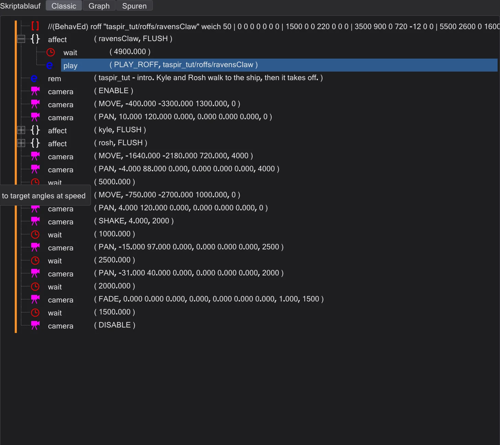
Ein Skript von Grund auf schreiben
Ein neues leeres Skript, ein affect-Block für eine Figur und ein erster Befehl darin.

Drei Wege, einen Befehl einzufügen
Doppelklick, Ziehen und Ablegen oder die Einfg-Taste - und wie ein Befehl genau dort landet, wo du ihn haben willst.

Die Werte eines Befehls ändern
Der Event-Editor: Listen, Zahlen, Dateifelder, Namen aus der Karte - und Ausdrücke wie get, tag und random.
Zeilen verschieben, kopieren und auskommentieren
Ein Skript umbauen: mehrere Zeilen wählen, ziehen, verdoppeln und Zeilen abschalten, ohne sie zu löschen.
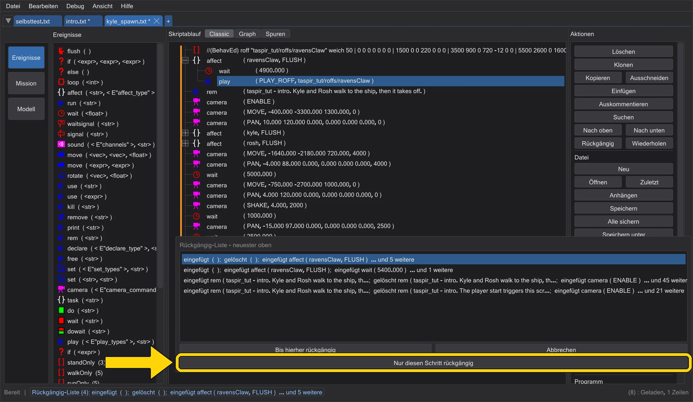
Alles rückgängig machen - sogar einen Schritt aus der Mitte
Rückgängig und Wiederholen, der ganze Verlauf und das Zurücknehmen eines einzelnen alten Schritts, während alles danach bleibt.
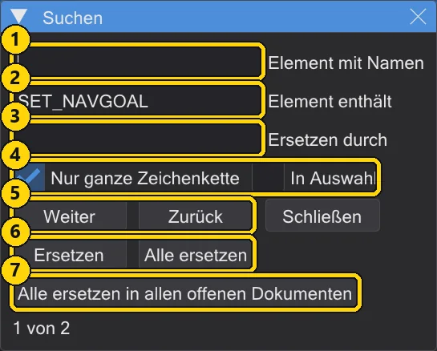
Suchen und Ersetzen in allen offenen Skripten
Eine Figur in allen Skripten einer Mission auf einmal umbenennen - mit dem Suchfenster.
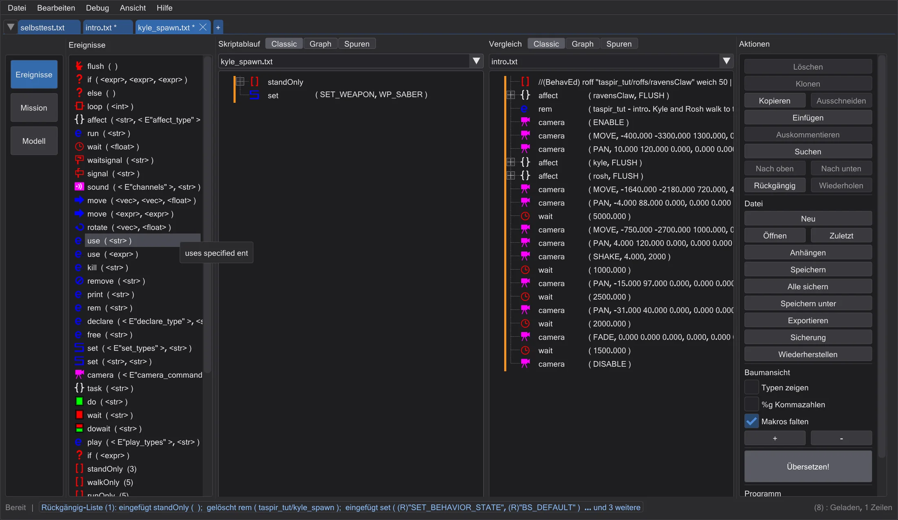
Lesezeichen und die geteilte Ansicht
In einem langen Skript zwischen Stellen springen und zwei Skripte nebeneinander vergleichen.

Übersetzen und Fehler beheben
Das Skript in die .ibi verwandeln, die das Spiel ausführt, die Meldungen lesen und zur falschen Zeile springen.
Warten, bis eine Figur angekommen ist
task, dowait und do: eine Figur ihren Weg beenden lassen, bevor sie sich dreht oder spricht - oder sie zwei Dinge zugleich tun lassen.

Zwei Skripte aufeinander warten lassen
signal und waitsignal: Ein Skript hält an, bis das andere „los“ sagt.
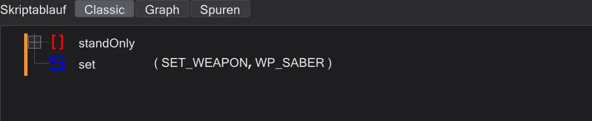
Makros nutzen
walkOnly, runOnly, standOnly und die Patrouillen: mehrere set-Befehle in einer Zeile.
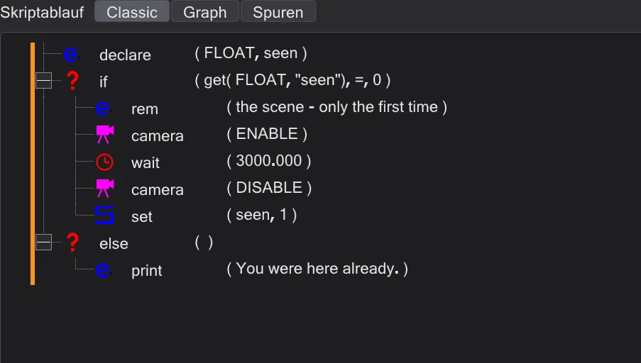
Nur beim ersten Mal: Variablen und if
Merken, dass etwas geschehen ist - eine Variable deklarieren, setzen und mit if abfragen.
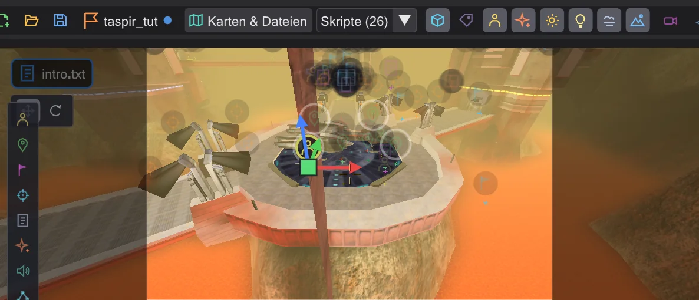
Eine Wache dreht ihre Runde
Eine Schleife um Laufziele: die Figur geht von Punkt zu Punkt, wartet und beginnt von vorn - für immer.
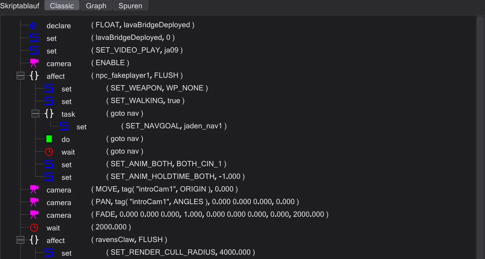
Ein übersetztes Skript des Spiels öffnen
Das Spiel liefert nur .ibi-Dateien aus. behaved macht daraus wieder ein Skript, das du lesen und ändern kannst.
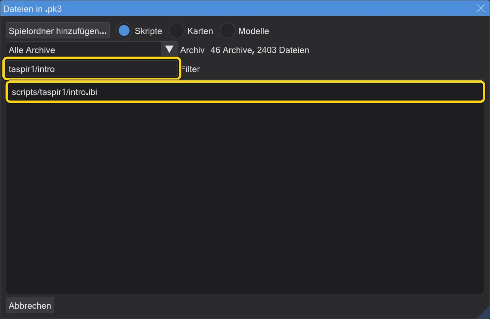
Dateien in den Spielarchiven finden
Skripte, Karten und Modelle des Spiels und jeder Mod, durchsuchbar in einem Fenster.
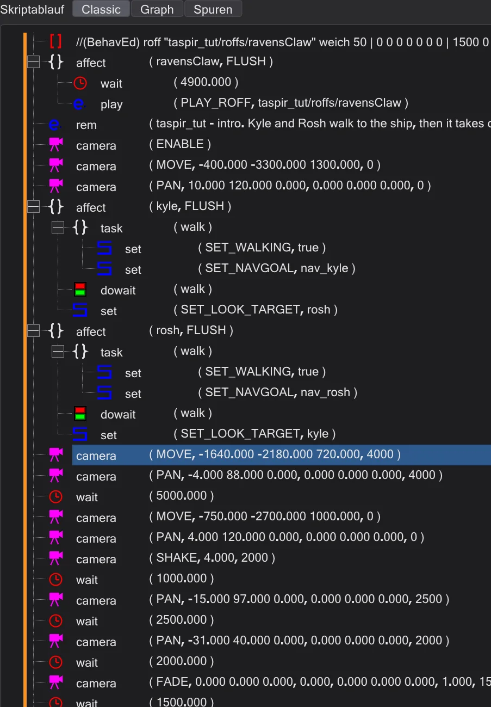
Sehen, was du geändert hast
Der Änderungsrand, die Rückkehr zum Original eines Befehls und das Finden gleicher Befehle.
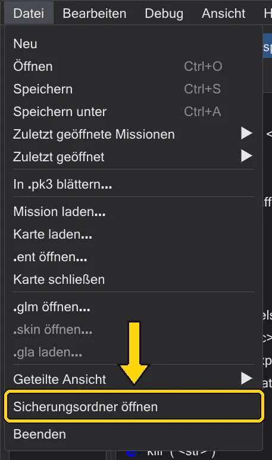
Eine alte Version zurückholen
Automatische Kopien bei jedem Speichern, deine eigene Sicherung und ihre Wiederherstellung.
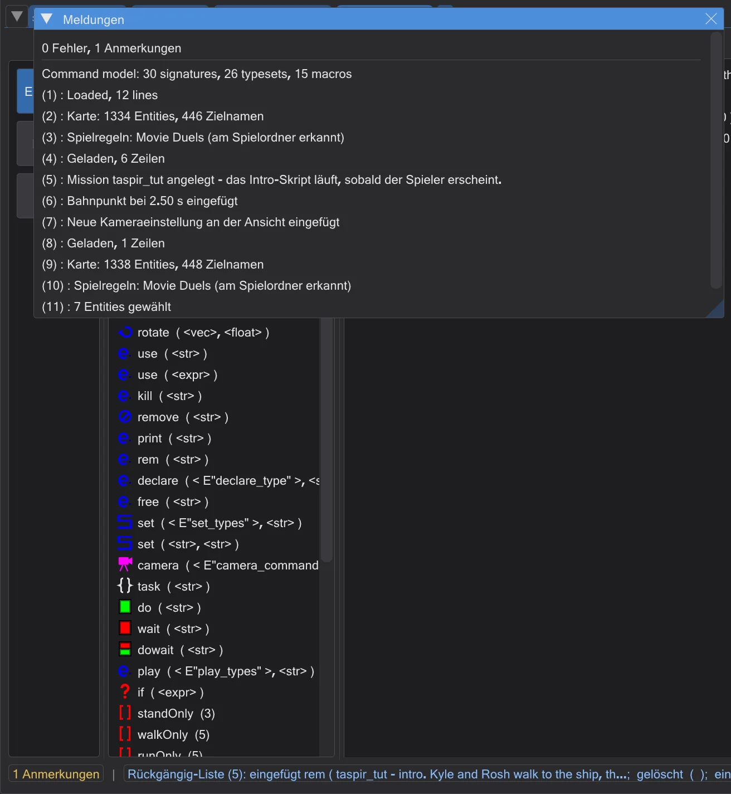
Die Warnungen verstehen
Das Fenster Meldungen: Werte, die nicht in ihrer Liste stehen, unbekannte Felder, Hinweise beim Lesen einer Datei.
Kamera und Zeitleiste
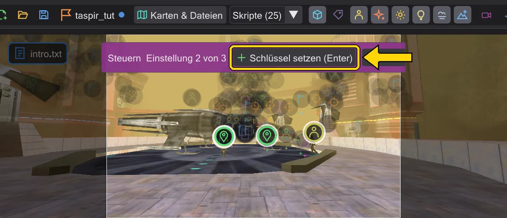
Eine Kameraeinstellung selbst fliegen
Steuern: in der Kamera sitzen, mit Maus und WASD fliegen und Schlüssel entlang der Zeitleiste setzen.
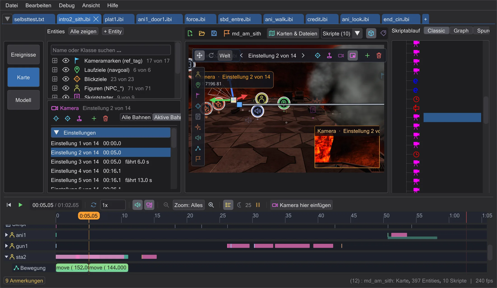
Eine Einstellung dorthin setzen, wohin du schaust
Schau dich um, bis das Bild stimmt, dann setz eine Einstellung - oder eine neue - genau dorthin.
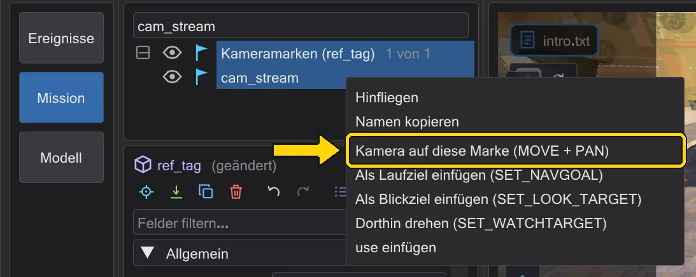
Die Kamera auf eine Marke in der Karte richten
Einen ref_tag als Kameraposition nutzen - verschieb die Marke, und die Einstellung folgt.
Zoomen, schwarz abblenden und wackeln
Die Kamerabefehle ZOOM, FADE und SHAKE - und wo du sie in der Zeitleiste siehst.
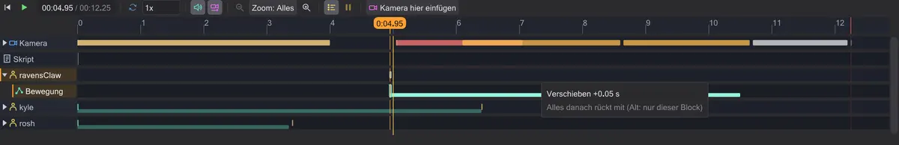
Eine Zwischensequenz in der Zeitleiste neu takten
Eine Einstellung verlängern, einen Satz später beginnen lassen, einen ganzen Teil verschieben - durch Ziehen von Blöcken.
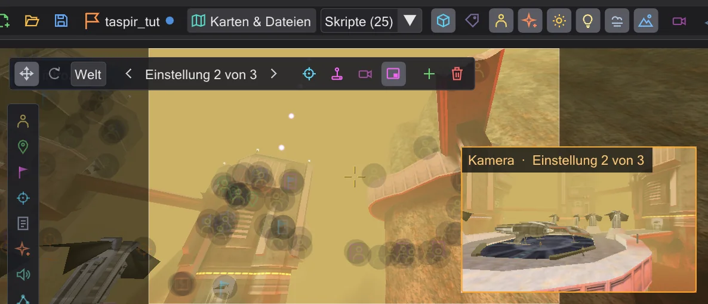
Beim Arbeiten durch die Kamera schauen
Durch die Kamera, das kleine Vorschaubild, Mitfahren und das Abspieltempo.
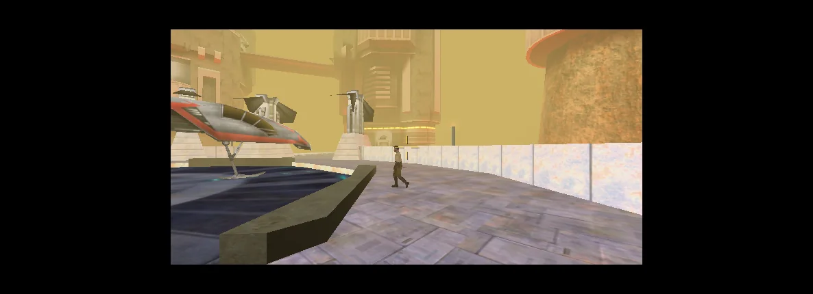
Die Kamera einer Figur folgen lassen
camera FOLLOW dreht die Kamera allen aus einer Kameragruppe nach - und DISTANCE hält sie nah dran.
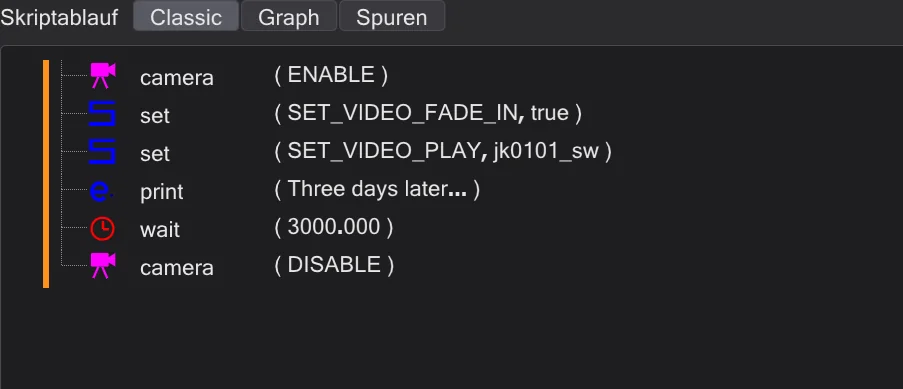
Ein Video oder eine Textzeile zeigen
SET_VIDEO_PLAY für einen .roq-Film mitten in einer Szene, print für einen kurzen Text auf dem Bildschirm.
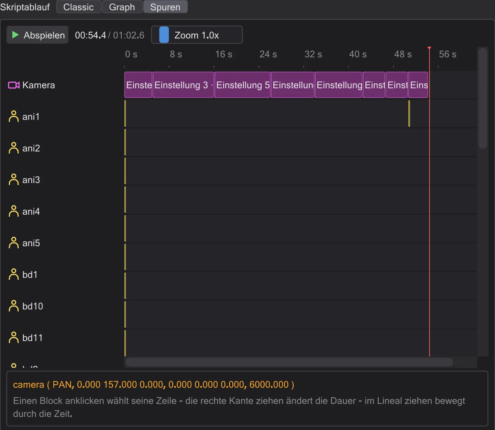
Eine Szene in der Spuren-Ansicht timen
Das Skript über die Zeit, direkt in der Skriptspalte: Kamera, Figuren und Dialog als Zeilen.
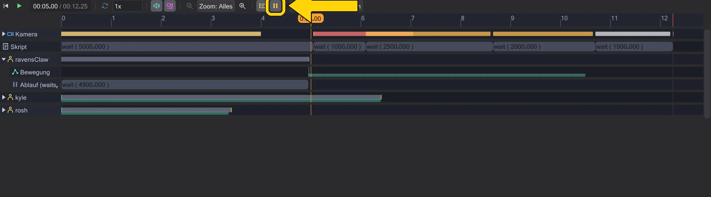
Die Zeitleiste im Detail
waits als Blöcke, ruhige Zeilen, Bilder statt Sekunden, Tempo - und die Warnung bei sich überlappenden Kamerafahrten.
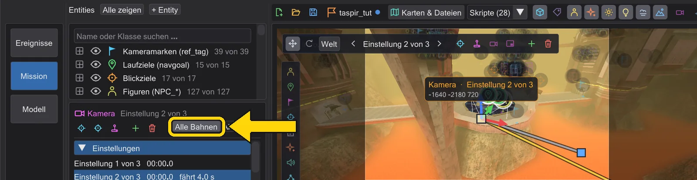
Blickpunkte und Kamerabahnen merken
Zifferntasten für Ansichten, die du wieder brauchst - und nur die Kamerabahn, an der du gerade arbeitest.
Figuren
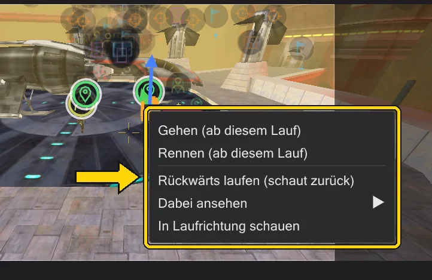
Gehen, rennen oder rückwärts laufen
Ändern, wie sich eine Figur bewegt - direkt an ihrer Bahn auf der Karte.
Eine Figur jemanden ansehen lassen
Beim Laufen eine andere Figur ansehen, sich einem Ziel zuwenden oder wieder in Laufrichtung schauen.
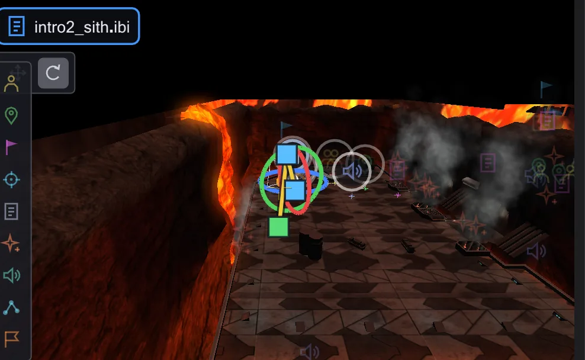
Eine Figur zu einem Zeitpunkt drehen
Festlegen, wohin eine Figur zu einer bestimmten Zeit schaut - mit dem Drehring auf der Karte.
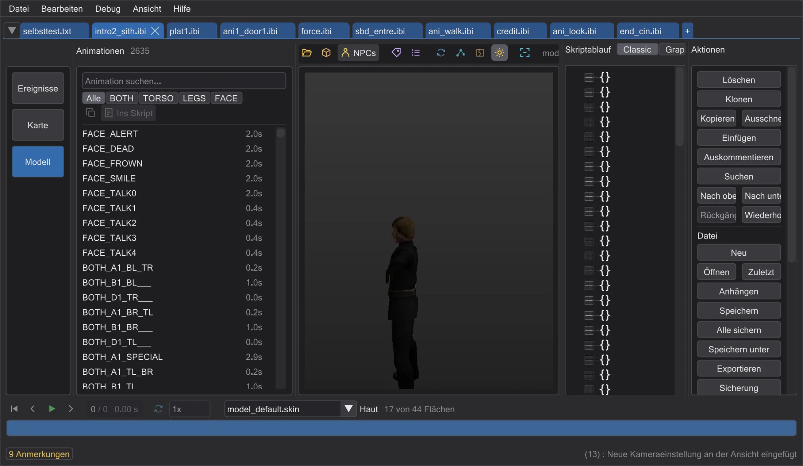
Eine Figur eine Animation spielen lassen
Eine Animation in der Modellansicht finden, ansehen und mit einem Klick ins Skript setzen.
Einen Satz Dialog hinzufügen
Ein Klang auf dem Stimmkanal einer Figur, angehört und auf die Kamera abgestimmt.
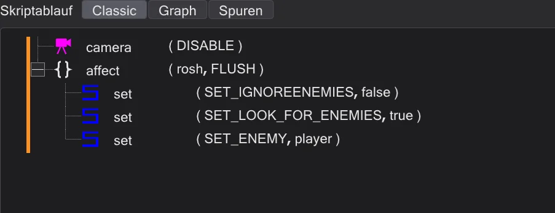
Nach der Zwischensequenz einen Kampf beginnen
Einen Feind ruhig halten, solange die Kamera läuft, und ihn dann den Spieler angreifen lassen.
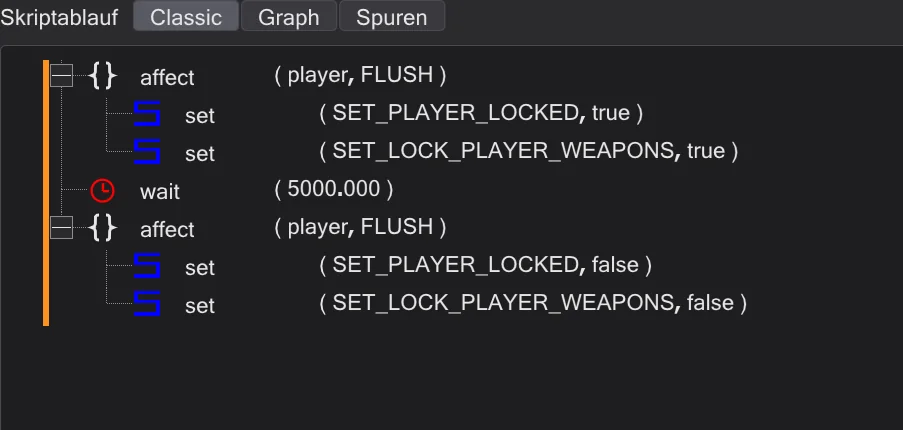
Den Spieler während eines Gesprächs festhalten
Den Spieler an Ort und Stelle sperren - ohne Zwischensequenz-Kamera - und ihn wieder freigeben.
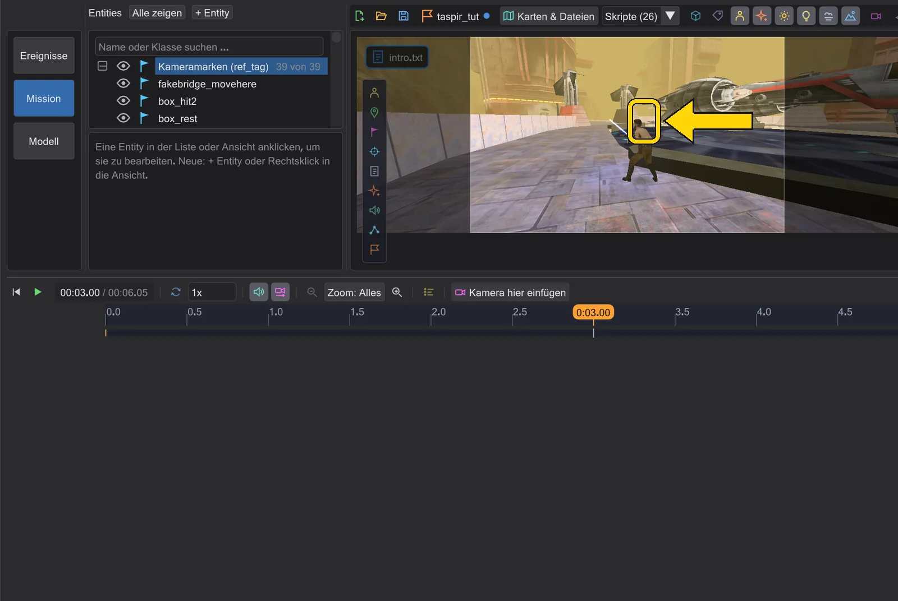
Ein Lichtschwert in einer Szene zünden
Einer Figur ihr Schwert geben und die Klinge im richtigen Moment ein- und ausschalten.
Karte und Entities
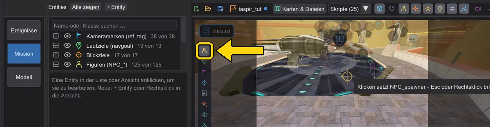
Entities setzen, verschieben und drehen
Ein Laufziel auf den Boden setzen, es am Raster verschieben, drehen, kopieren.
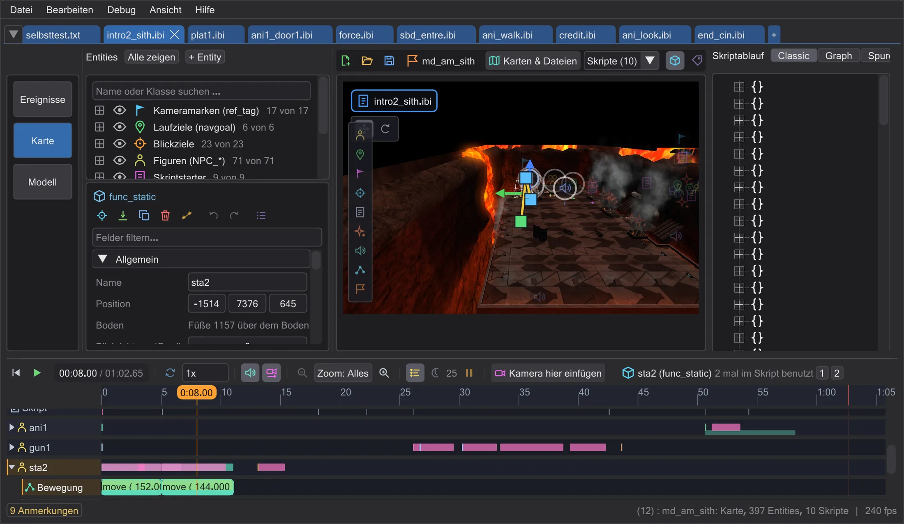
Eine Entity finden und hinfliegen
Die Entity-Liste durchsuchen, hinfliegen, ausblenden, was im Weg ist.

Die Schlüssel einer Entity bearbeiten
Name, Position, spawnflags und alle anderen Schlüssel im Inspektor - und die Suche nach NPC-Typen.
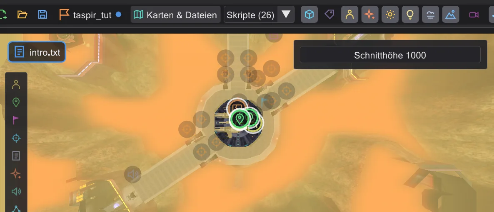
Die Karte von oben ansehen
Draufsicht mit Schnitthöhe - um den Grundriss eines Levels zu sehen, ein Stockwerk nach dem anderen.

Besser sehen in dunklen Karten
Helligkeit, Grundlicht und das Abschalten von Effekten, Nebel oder Himmel beim Arbeiten.
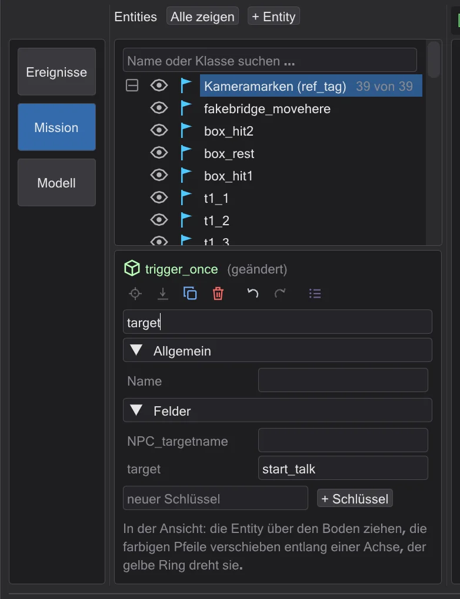
Eine Szene starten, wenn der Spieler irgendwo hingeht
Einen Auslöser der Karte auf einen eigenen Skriptstarter richten - die Szene beginnt, wenn der Spieler den Bereich betritt.
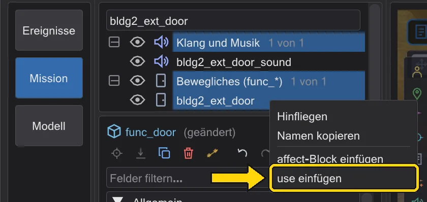
Eine Tür aus dem Skript öffnen
use öffnet eine Tür, löst einen Auslöser aus oder startet einen Skriptstarter - über seinen Namen.
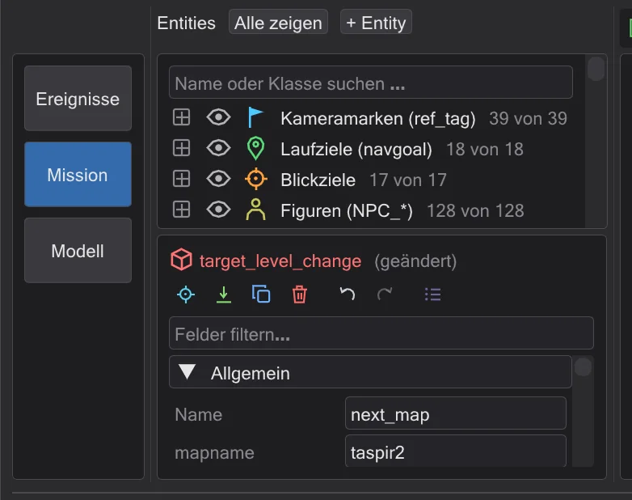
Am Ende zur nächsten Karte wechseln
Eine Kartenwechsel-Entity, benutzt von der letzten Zeile des Skripts.
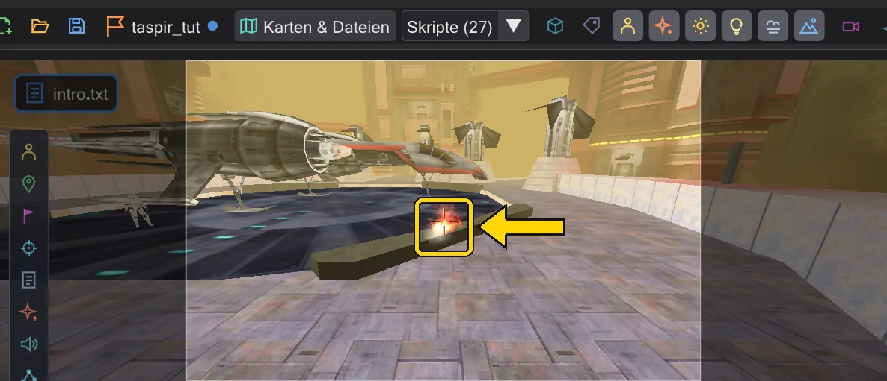
Einen Effekt hinzufügen und die Musik wechseln
Ein fx_runner, der auf Stichwort startet, und ein Musikwechsel aus dem Skript.
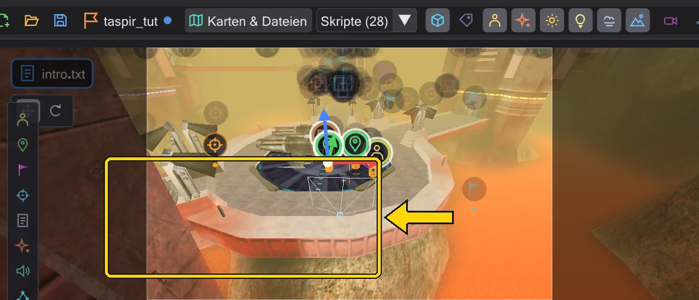
Viele Entities auf einmal bewegen
Mit einem Rahmen wählen, die Gruppe verschieben und drehen, sie kopieren.
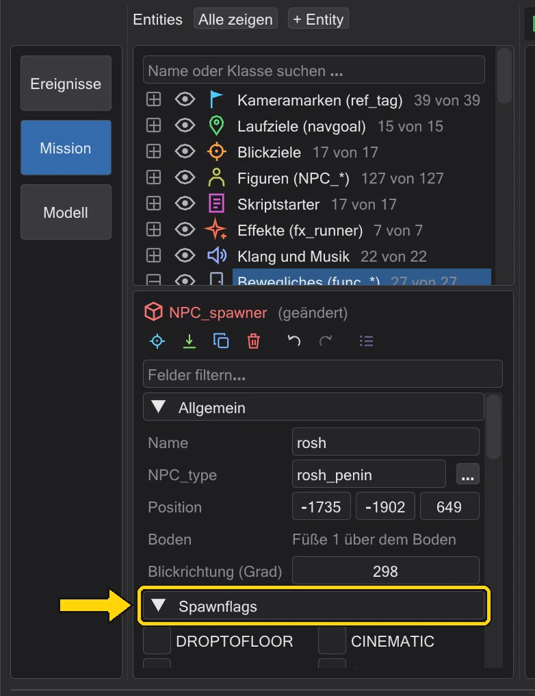
Eine Figur, die auf Stichwort erscheint
Spawner-Keys und Spawnflags: eine Figur, die wartet, bis das Skript sie ruft.
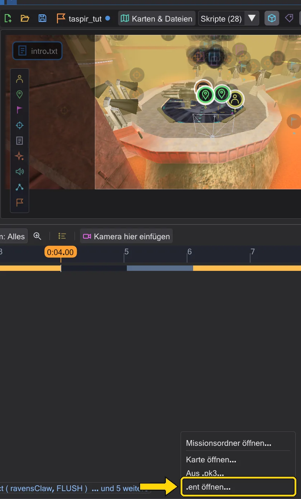
Eine separate .ent-Datei laden
Die Entities einer Karte austauschen, ohne die Karte anzufassen - so fügen viele Mods ihre eigenen Szenen hinzu.
Animation

Eine Tür, die sich öffnet
Eine Tür oder Plattform mit move-Befehlen animieren: zwei Schlüssel, und das Skript bewegt sie.

Eine ROFF-Datei des Spiels ändern
Einen ROFF-Flug aus dem Spiel in Schlüssel verwandeln, ändern und als eigene Kopie speichern.
Missionen und Modelle
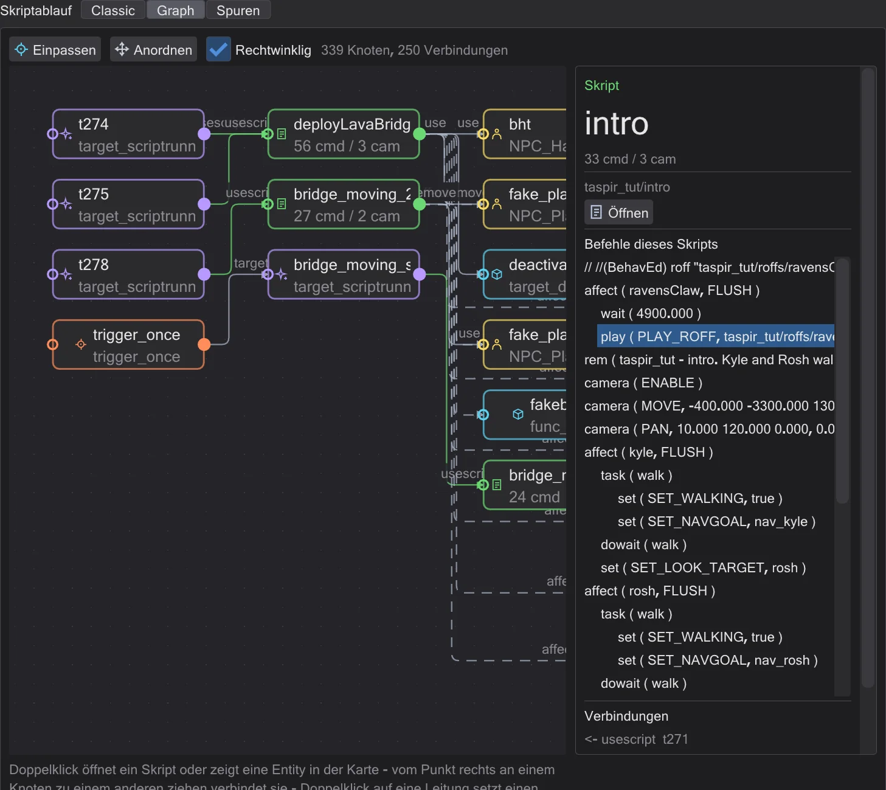
Eine Figur mit einem Skript verbinden
In der Graph-Ansicht: einen Draht von einer Figur zu einem Skript ziehen und wählen, wann es läuft.

Eine Mission fortsetzen und packen
Die Mission wieder öffnen, prüfen und für das Spiel in eine .pk3 packen.

NPCs Wege zum Laufen geben
Das Wegpunktnetz der NPCs automatisch anlegen, prüfen und Wege von Hand ergänzen.
Ein Figurenmodell ansehen
Jede Figur des Spiels laden, drehen, ihre Skins und ihr Skelett ansehen.
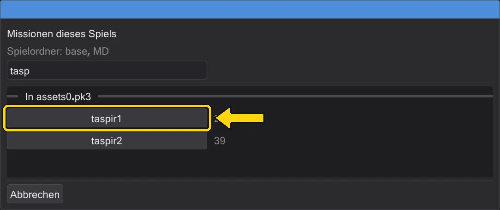
Eine Zwischensequenz des Spiels ändern
Eine Mission von Jedi Academy öffnen, eine Kameraeinstellung ihres Intros ändern und sie als eigene Version packen.
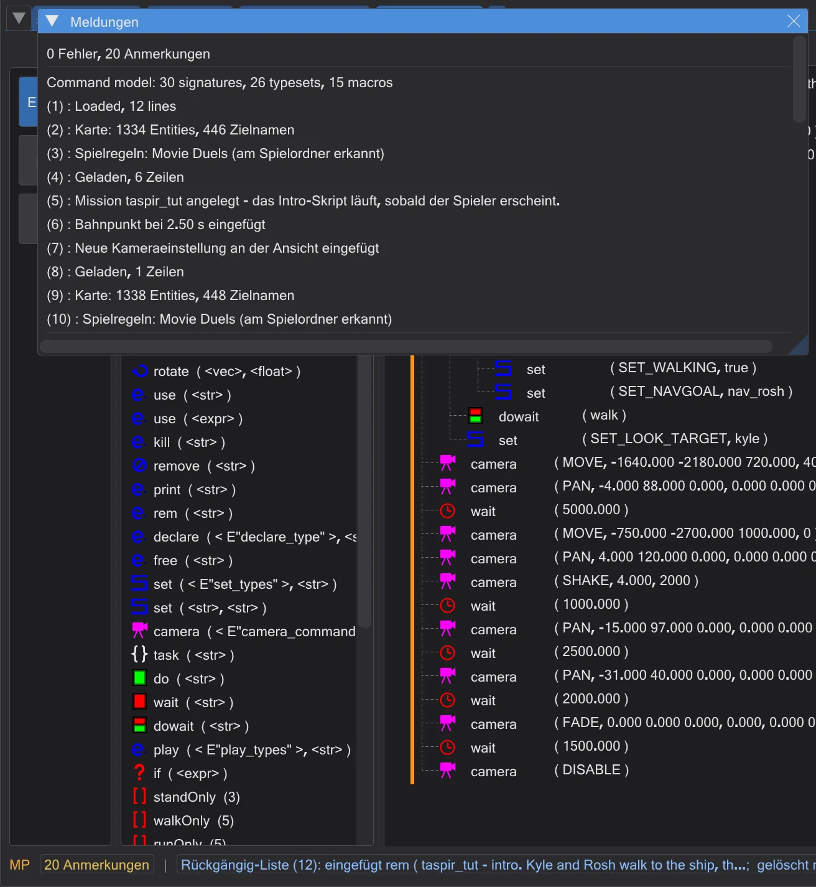
Ein Skript für den Mehrspielermodus prüfen
Das Zielspiel umschalten und lesen, was auf einem Mehrspieler-Server anders funktioniert.
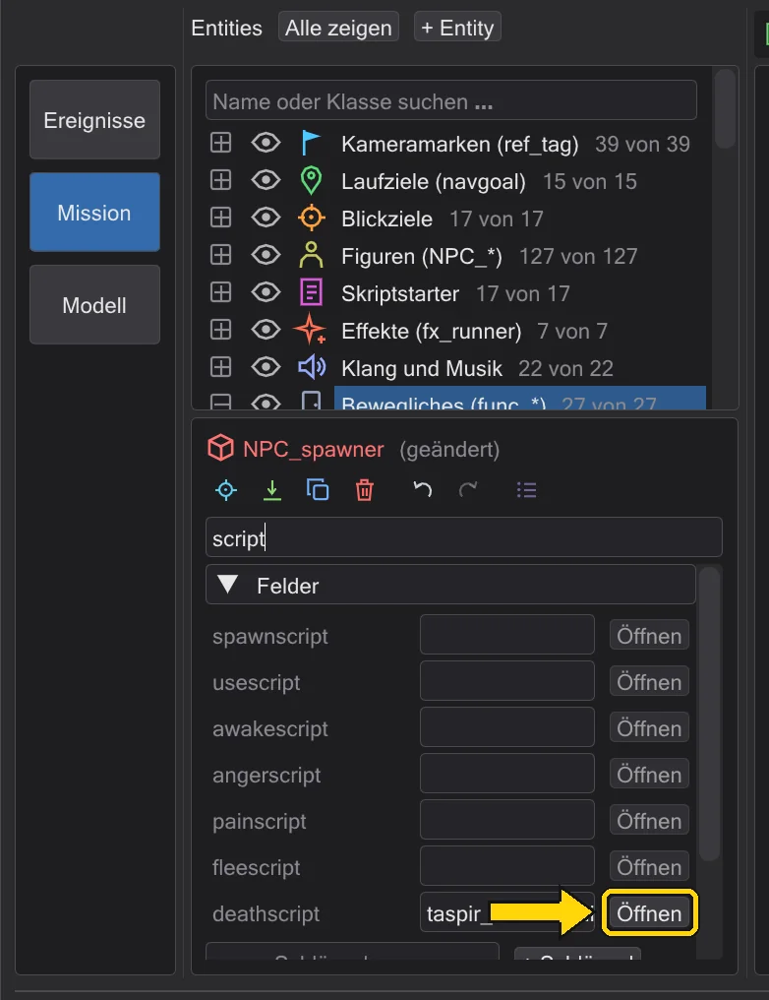
Stirbt der Feind, geht die Tür auf
Ein deathscript an einer Figur: sobald sie fällt, läuft ein Skript von dir - hier öffnet es eine Tür.
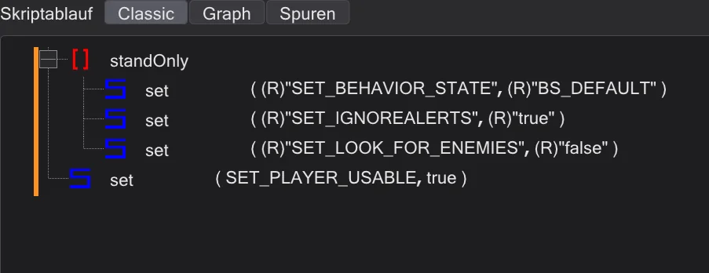
Der Spieler spricht mit einer Figur
usescript und SET_PLAYER_USABLE: die Benutzen-Taste an einer Figur startet ihr Skript - ein Gespräch.
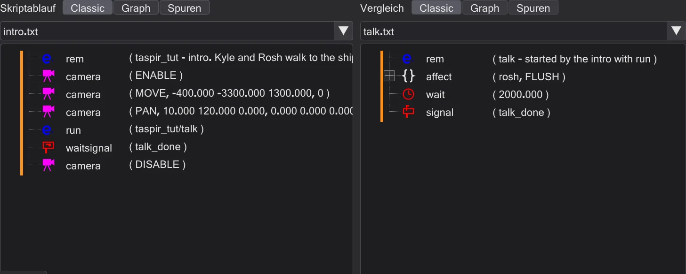
Mehrere Skripte zusammenarbeiten lassen
run startet ein Skript, signal und waitsignal übergeben - und die geteilte Ansicht zeigt beide zugleich.
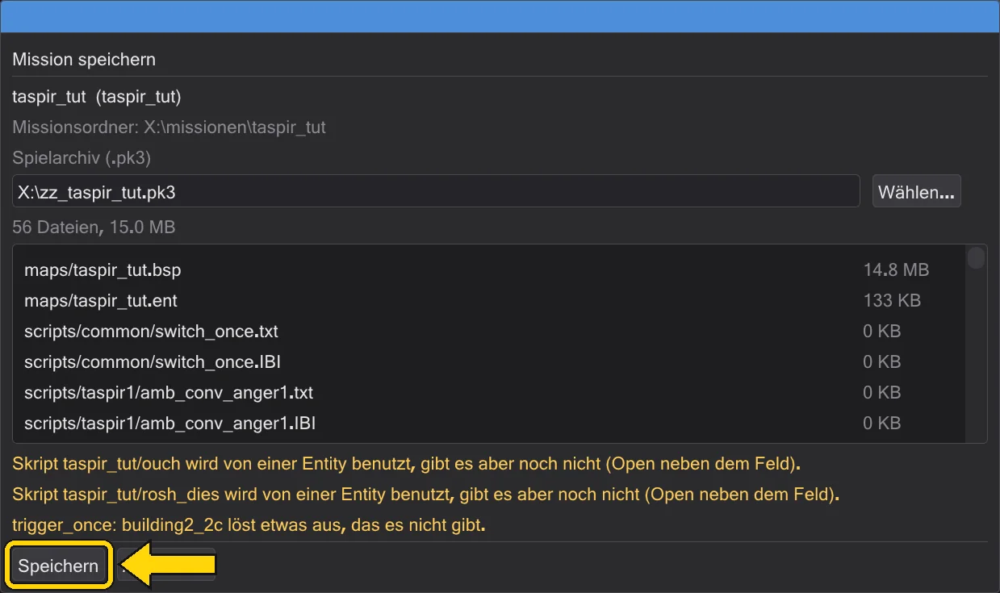
Beheben, was Mission speichern meldet
Die Prüfungen von Mission speichern - was jede Meldung bedeutet, welche das Packen aufhalten und wie du sie behebst.
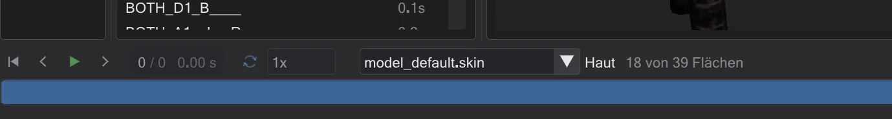
Skins und Skelette eines Modells
Ein anderer Skin, ein anderes Skelett und die Flächen, die ein Skin ein- oder ausschaltet.
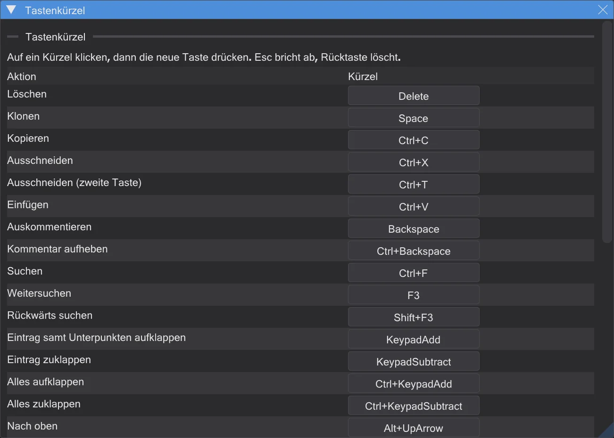
Das Programm nach deinem Geschmack einrichten
Tastenkürzel, Farbgebung, Sprache, Größe der Oberfläche und die Spaltenaufteilung.